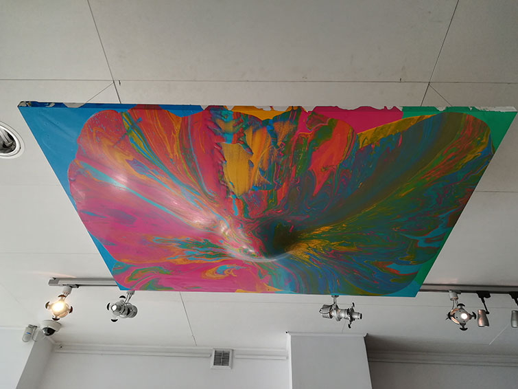
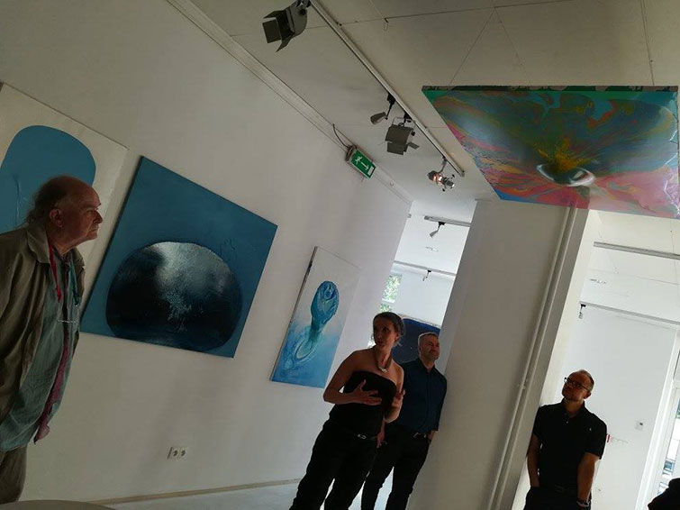
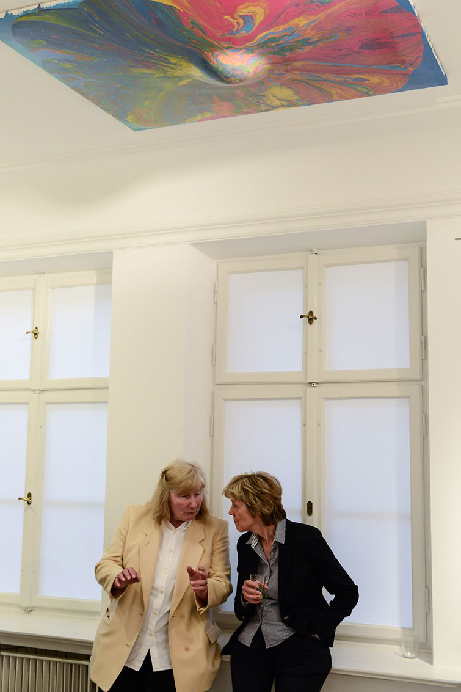
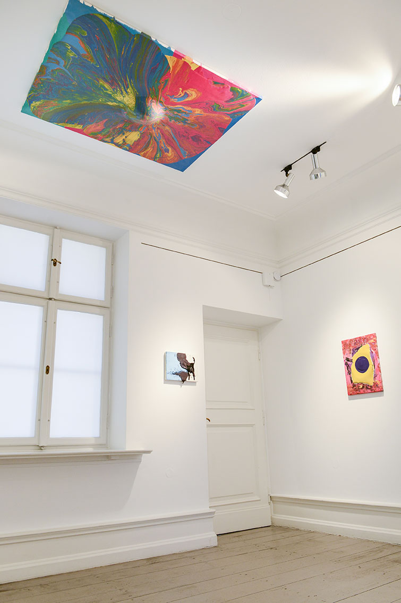

PrK





PrK
Obraz dedykowany Przemysławowi Kwiekowi
farba alkidowa na płótnie, obraz poziomy, zawieszony pod sufitem, w procesie ciągłego schnięcia – miękki w dotyku, 101x133cm 2017
Obraz w kolekcji prywatnej
widok na wystawę indywidualną pt. GRUBO, Galeria Apteka Sztuki, Warszawa, 2017
Widok na wystawę pt. ABSTRAKCJA JEST KOBIETĄ, Polish Institute, Dusseldorf, 2018